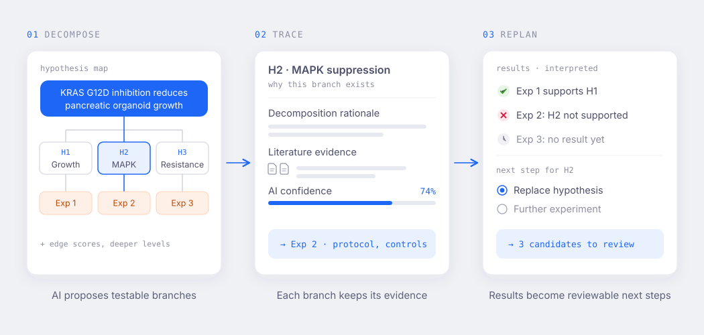

Enlarge imageHuman–AI interaction
Theseus
Theseus is a graph-based workspace where researchers and AI agents break down hypotheses, review experiment protocols, interpret results, and decide what to investigate next. Proposed changes stay visible and reviewable before they become part of the workspace.